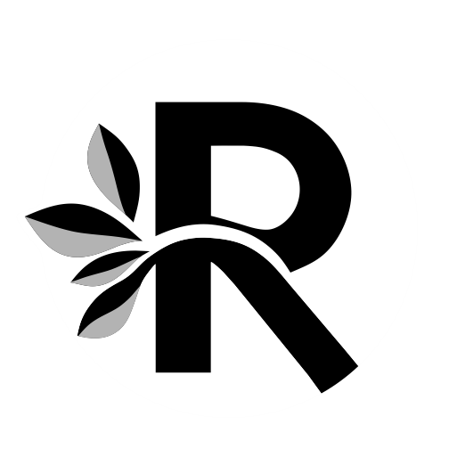

16 y 17 de noviembre · Perico
Nos visitan
misioneros
del Instituto MISION
Deslizá
→
Reunión especial
Lunes
16
20:30
Foro
Prácticas de justicia
21:15
Plenaria
Hineni · Isaías 6
República de Siria 255 · Entrada libre y gratuita
Martes 17 · por la mañana
Jornada de
evangelismo
10 A 12 HS
Salimos desde la iglesia a las calles de Perico, junto a los misioneros. ¡Sumate!
Reunión especial
Martes
17
20:30
Talleres
Matrimonios
Jóvenes y adolescentes
Cuarto de oración
21:15
Plenaria
El clamor del Espíritu
República de Siria 255 · Entrada libre y gratuita
Te esperamos
Noches de
misión
Lun
16
20:30 HS
Foro y plenaria
Mar
17
10 A 12 HS
Jornada de evangelismo
Mar
17
20:30 HS
Talleres y plenaria
República de Siria 255 · Perico
Entrada libre y gratuita

Iglesia
El Renuevo